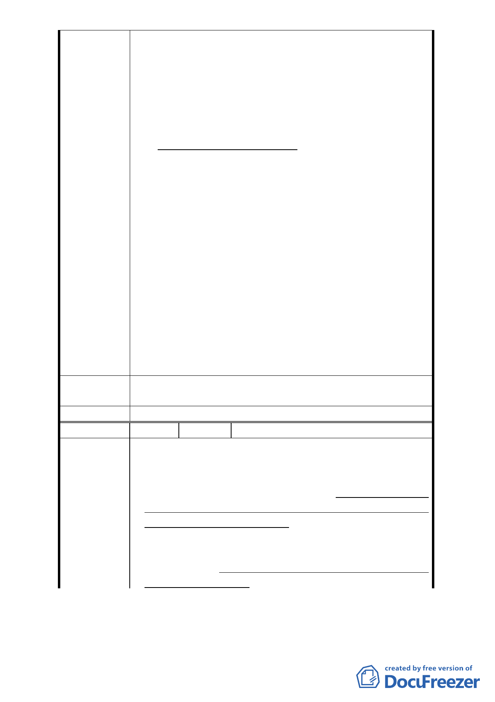

“現有公共設施用地因不適於原來之使用而變更者，應優
先變更為該地區其他不足之公共設施用地”之規定，因此
應優先將原機關用地(0.1747 公頃)變更為公園用地以與原
公園預定地(0.1613 公頃)連成一片，雖然變更後之面積僅
0.33 公頃，但總算是保住了政大生活圈內的唯一公園。
法令依據：
依照都市計畫細部計畫審議原則(民國 91 年 06 月 13 日發
布)
第六條 細部計畫審議前，應先檢視其計畫範圍、公共設
施用地面積、位置等是否符合主要計畫相關規定
第十一條 細部計畫內公共設施用地之劃設與配置，應依
下列原則審議：
(一) 各項公共設施用地應依都市計畫定期通盤檢討
實施辦法所定之檢討標準劃設，並應就人口、
土地使用、交通等現況及未來發展趨勢，決定
其項目、位置與面積。
(二) 鄰里性公共設施用地之區位，應考慮其服務範
圍、可及性、迫切性，以及與主要計畫劃設之
公共設施用地之相容性。
(三) 現有公共設施用地因不適於原來之使用而變更
者，應優先變更為該地區其他不足之公共設施
用地。
專案小組審
查結論
同陳情案 1
委員會決議 同陳情案 1
編
號5
陳情人 張萍傑
1.萬興里是文山區人數最多的里(96 年底 14283 人)，文山區
鄰里公園計 45 處(如附件)，然本里尚無一處
2.都市計畫 77 年審定時(79 年底人數 7449)，尚且規劃有
1613 平方米公園預定地，已屬小型但目前里民已激增逾
陳情理由
一倍，而擬修改公園預定地不增反減，減幅度達-54％，
僅於 742 平方米，甚不合理，且此縮小後的基地程細狹
長三角型，雖名為公園實難具公園實質功能，對里民而
言並不公平。
3.基於以上理由，期盼不應因計畫之改變而犧牲全體居民對
公園綠地得需求權益，而違政府照顧全民的施政作為。
- 10 -